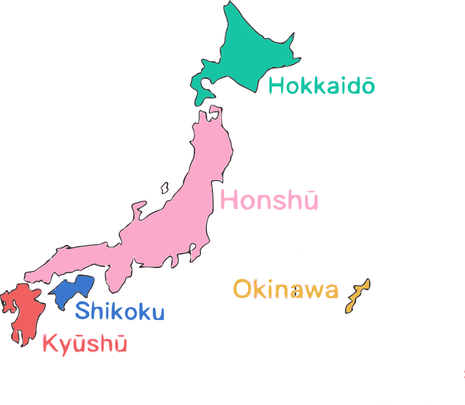

Países
🏠 Início
🇧🇷 Brasil
🇩🇪 Alemanha
🇯🇵 Japão
🇫🇮 Finlândia
🇮🇹 Itália
🇦🇺 Austrália
Mapa do Japão

Hokkaidō
Característica
Dados
Clima
Frio temperado, com invernos rigorosos
População
Aprox. 5,2 milhões
Altitude
~0 m a 2.290 m
Vegetação
Florestas boreais e coníferas
Fechar
Honshū
Característica
Dados
Clima
Temperado, variando de norte a sul
População
Aprox. 104 milhões
Altitude
~0 m a 3.776 m
Vegetação
Florestas temperadas
Fechar
Shikoku
Característica
Dados
Clima
Subtropical úmido
População
Aprox. 4 milhões
Altitude
~0 m a 1.982 m
Vegetação
Florestas densas
Fechar
Kyūshū
Característica
Dados
Clima
Subtropical
População
Aprox. 13 milhões
Altitude
~0 m a 1.592 m
Vegetação
Florestas tropicais e subtropicais
Fechar